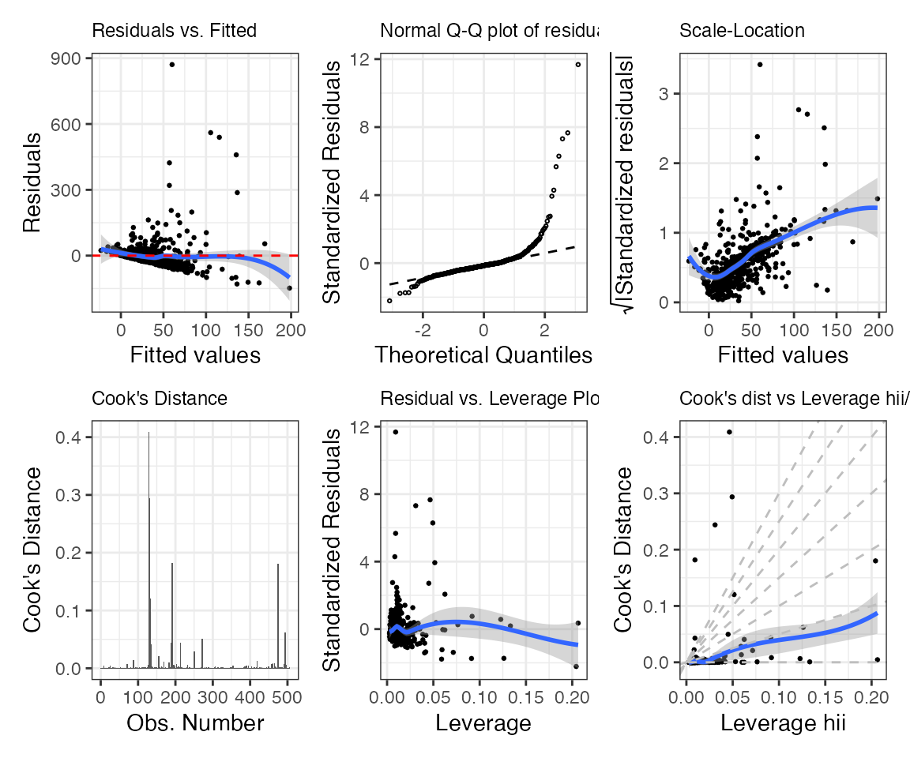

Reproducing LA County Standard Errors from (Buja et al. 2019)
Riccardo Fogliato, Shamindra Shrotriya
Source:vignettes/se-la-county-data.Rmd
se-la-county-data.RmdSetup and Installation
First, we’ll load the maars package, and other tidyverse analysis packages. If you are a new user, you will need to manually run the following commands in a new in an R session before running the vignette code below:
install.packages(pkgs = c("tidyverse", "vroom", "glue", "magrittr",
"knitr", "kableExtra", "remotes",
"patchwork"))
remotes::install_github('shamindras/maars', force = TRUE)We will explicitly load the tidyverse set of packages to get access to the magrittr pipe (%>%) operator. We will also set a global random seed for reproducibility purposes.
For all other functions we will refer to them explicitly using the package::function reference method to avoid ambiguity in the source package of the specific function used (to avoid function name conflicts).
Goal of Analysis
We try to replicate the results of Table 1 in (Buja et al. 2019), as shown below:
![Table 1 from [@buja2019modelsasapproximationspart1]](figures/buja1_table1.png)
Table 1 from (Buja et al. 2019)
Loading the data
Let’s load the LA County Homeless persons data as used in (Buja et al. 2019) and briefly examine it. The dataset is already included in the package.
# LA County source data url, use glue to split string in easy to read format
# let's load
data('la_county', package = 'maars')
la_county %>% dim(x = .)
#> [1] 505 7Let’s view the first few rows to understand the structure of the data frame.
la_county %>%
head(x = .) %>%
knitr::kable(x = ., format = "html", digits = 2, align = "c") %>%
kableExtra::kable_styling(position = "center")| StreetTotal | MedianInc1000 | PercVacant | PercMinority | PercResidential | PercCommercial | PercIndustrial |
|---|---|---|---|---|---|---|
| 2 | 41.58 | 2.58 | 30.47 | 86.68 | 12.23 | 0.00 |
| 0 | 53.48 | 2.84 | 16.92 | 12.09 | 0.26 | 0.00 |
| 6 | 35.24 | 2.03 | 64.39 | 15.83 | 5.66 | 4.31 |
| 4 | 36.68 | 3.13 | 63.71 | 29.81 | 3.69 | 4.68 |
| 5 | 30.87 | 1.58 | 61.50 | 72.81 | 20.37 | 0.00 |
| 18 | 50.71 | 2.54 | 46.61 | 42.66 | 19.33 | 0.00 |
It is already in tidy format (Wickham 2014). So we have imported the data correctly, given that we match the column names in Table 1 of the (Buja et al. 2019) paper.
Fitting the OLS model
We now fit an linear model of the count of homeless people (StreetTotal) as the response variable, against the other covariates using Ordinary Least Squares (OLS).
mod_fit <- stats::lm(formula = StreetTotal ~ ., data = la_county)Estimating the variance
Let’s estimate the variance of the regression coefficients for the fitted model via
- sandwich estimator (see White (1980b)).
- (n-out-of-n) empirical bootstrap with \(B=10^{3}\) replications.
- multiplier bootstrap with \(B=10^{3}\) replications with Rademacher weights.
- residual bootstrap with \(B=10^{3}\) replications.
To do so, we will use comp_var. The sandwich estimator of the variance is always computed by default.
mms_fit <- comp_var(mod_fit = mod_fit,
boot_emp = list(B=10^3),
boot_mul = list(B=10^3, weights_type='rademacher'),
boot_res = list(B=10^3))We have obtained an object of class maars_lm, lm We also have all the ingredients necessary to reproduce table 1 of the (Buja et al. 2019) paper. Technically, we will only need the empirical bootstrap and sandiwch estimates. In maars, the estimates, standard errors, t-statistics, and p-values can be obtained in a tidy output via get_summary. This function returns the sandwich, again, returned by default, unless specified otherwise. Let’s first extract the summary of mms_fit.
mms_summary <- get_summary(mms_fit, boot_emp = TRUE, well_specified = TRUE)
head(mms_summary) %>%
knitr::kable(x = ., format = "html", digits = 2, align = "c") %>%
kableExtra::kable_styling(position = "center")| term | estimate | stat_type | stat_val | var_type_abb |
|---|---|---|---|---|
| (Intercept) | 0.76 | std.error | 22.77 | lm |
| (Intercept) | 0.76 | statistic | 0.03 | lm |
| (Intercept) | 0.76 | p.value | 0.97 | lm |
| MedianInc1000 | -0.18 | std.error | 0.19 | lm |
| MedianInc1000 | -0.18 | statistic | -0.98 | lm |
| MedianInc1000 | -0.18 | p.value | 0.33 | lm |
As we can see, the output is in tidy format as a tibble object. This makes it much more readily amenable for additional transformations using the tidyverse set of packages.
We can now reformat the output of get_summary to make it more easily comparable to table 1 in the paper. This can be achieved by first dropping the p-values (which are not needed), followed by the computation of the ratios of the variances, and last by a pivot_wider.
mms_summary %>%
# drop the p-values
dplyr::filter(stat_type != 'p.value') %>%
# compute the variances
tidyr::pivot_wider(names_from = c(stat_type, var_type_abb),
values_from = stat_val) %>%
# compute the ratios
dplyr::mutate(ratio_emp_vs_lm = std.error_emp/std.error_lm,
ratio_sand_vs_lm = std.error_sand/std.error_emp,
ratio_sand_vs_emp = std.error_sand/std.error_emp) %>%
# reorder the variables
dplyr::select(term,
estimate,
starts_with("std.error"),
starts_with("ratio"),
starts_with("statistic")) %>%
# rename the variables
purrr::set_names(x = ., nm = c("Term", "$\\widehat{\\beta}_{j}$",
"$SE_{\\text{lin}}$",
"$SE_{\\text{boot}}$",
"$SE_{\\text{sand}}$",
"$\\frac{SE_{\\text{boot}}}{SE_{\\text{lin}}}$",
"$\\frac{SE_{\\text{sand}}}{SE_{\\text{lin}}}$",
"$\\frac{SE_{\\text{sand}}}{SE_{\\text{boot}}}$",
"$t_{\\text{lin}}$",
"$t_{\\text{boot}}$",
"$t_{\\text{sand}}$")) %>%
knitr::kable(
x = ., format = "html", digits = 2,
align = "c", escape = TRUE
) %>%
kableExtra::kable_styling(position = "center")| Term | \(\widehat{\beta}_{j}\) | \(SE_{\text{lin}}\) | \(SE_{\text{boot}}\) | \(SE_{\text{sand}}\) | \(\frac{SE_{\text{boot}}}{SE_{\text{lin}}}\) | \(\frac{SE_{\text{sand}}}{SE_{\text{lin}}}\) | \(\frac{SE_{\text{sand}}}{SE_{\text{boot}}}\) | \(t_{\text{lin}}\) | \(t_{\text{boot}}\) | \(t_{\text{sand}}\) |
|---|---|---|---|---|---|---|---|---|---|---|
| (Intercept) | 0.76 | 22.77 | 15.91 | 16.63 | 0.73 | 0.96 | 0.96 | 0.03 | 0.05 | 0.05 |
| MedianInc1000 | -0.18 | 0.19 | 0.10 | 0.11 | 0.61 | 0.92 | 0.92 | -0.98 | -1.75 | -1.61 |
| PercVacant | 4.63 | 0.90 | 1.29 | 1.41 | 1.56 | 0.92 | 0.92 | 5.14 | 3.60 | 3.29 |
| PercMinority | 0.12 | 0.18 | 0.16 | 0.16 | 0.92 | 1.00 | 1.00 | 0.70 | 0.76 | 0.76 |
| PercResidential | -0.05 | 0.17 | 0.11 | 0.11 | 0.65 | 0.97 | 0.97 | -0.29 | -0.46 | -0.45 |
| PercCommercial | 0.74 | 0.27 | 0.39 | 0.40 | 1.45 | 0.98 | 0.98 | 2.70 | 1.90 | 1.86 |
| PercIndustrial | 0.91 | 0.32 | 0.58 | 0.59 | 1.82 | 0.99 | 0.99 | 2.82 | 1.56 | 1.55 |
We can obtain the other estimates of the variance (i.e., from residual and multiplier bootstraps) that we computed in comp_var in tidy format by specifying these additional arguments within get_summary.
mms_summary <- get_summary(mms_fit,
boot_emp = TRUE,
boot_res = TRUE,
boot_mul = TRUE,
well_specified = TRUE)
head(mms_summary) %>%
knitr::kable(x = ., format = "html", digits = 2, align = "c") %>%
kableExtra::kable_styling(position = "center")| term | estimate | stat_type | stat_val | var_type_abb |
|---|---|---|---|---|
| (Intercept) | 0.76 | std.error | 22.77 | lm |
| (Intercept) | 0.76 | statistic | 0.03 | lm |
| (Intercept) | 0.76 | p.value | 0.97 | lm |
| MedianInc1000 | -0.18 | std.error | 0.19 | lm |
| MedianInc1000 | -0.18 | statistic | -0.98 | lm |
| MedianInc1000 | -0.18 | p.value | 0.33 | lm |
Visualizing the estimates
We may want to compare some of the estimates that we obtained through comp_var in a plot. Confidence intervals and normality of the (bootstrap) estimates reprent two (arguably) interesting statistics the data scientist/researcher may want to analyze. The corresponding plots are returned by default when plot is called on a maars object, together with six other “typical” lm plots. The plots can be visualized sequentially calling plot on an object of class maars_lm, lm (e.g., plot(mms_fit, which=c(1,2,7)). Alternatively, we can store them in a list via get_plot, as we do below.
mms_plots <- get_plot(mms_fit)Let’s first look at the six “typical” lm plots.
patchwork::wrap_plots(1:6 %>% purrr::map(~ purrr::pluck(mms_plots, .)),
ncol = 3,
nrow = 2)
Let’s compare confidence intervals for the regression coefficients based on the different types of estimators of the variance.
purrr::pluck(mms_plots, 'p7')
Let’s now visualize the distribution of the bootstrap estimate to check whether it well approximates the normal distribution.
purrr::pluck(mms_plots, 'p8')